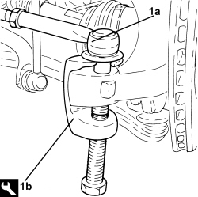
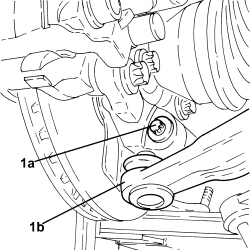
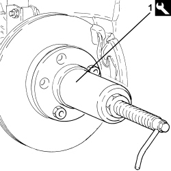
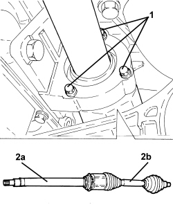
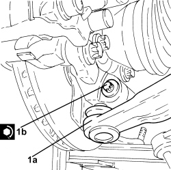
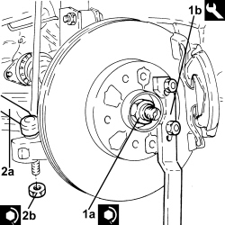

2710A14 RIGHT DRIVESHAFT WITH JOINTS AND INTERMEDIATE DRIVESHAFT - R+R
- Path
- Procedures > 27 AXLE > 2710 FRONT AXLE > 2710A DRIVESHAFTS AND JOINTS > 2710A14 RIGHT DRIVESHAFT WITH JOINTS AND INTERMEDIATE DRIVESHAFT - R+R
- Kind
- repair procedure (removal / refitting; the operation number is the code)
- Applies to
- engines: 1.9 JTD 8v, 1.9 JTD 16v, 2.4 JTD 20v; all production periods
- Interactive page
- https://sloeber94.github.io/elrnDB-fCrm/en/#/194002342
Applies to: engines: 1.9 JTD 8v, 1.9 JTD 16v, 2.4 JTD 20v; all production periods
 Removing
Removing
 Refitting
Refitting- Position the vehicle on a lift.
Op. 4450B04 RIGHT FRONT WHEEL - R.R
1. Remove front hub cap (1a) using the tool (1b).
Tool | Description | Function | Validity |
|---|---|---|---|
1847014000 | Extractor | Removing front hub cap |

Applies to: engines: 1.9 JTD 8v, 1.9 JTD 16v, 2.4 JTD 20v; all production periods
1. Undo the nut (1a) securing the right front driveshaft to the wheel hub using the tool (1b) for counter-torque.
Tool | Description | Function | Validity |
|---|---|---|---|
1870815000 | Counter-torque | Loosen/tighten nut securing front driveshaft to wheel hub |
2. Undo the nut fixing the steering rod to the right front steering knuckle.

Applies to: engines: 1.9 JTD 8v, 1.9 JTD 16v, 2.4 JTD 20v; all production periods
1. Disconnect the steering link (1a) from the right front steering knuckle using the tool (1b).
Tool | Description | Function | Validity |
|---|---|---|---|
1871000700 | Extractor | Extracting steering rod from steering knuckle |

Applies to: engines: 1.9 JTD 8v, 1.9 JTD 16v, 2.4 JTD 20v; all production periods
1. Unscrew the bolt (1a) and disconnect the lower wishbone (1b) from the right front steering knuckle.

Applies to: engines: 1.9 JTD 8v, 1.9 JTD 16v, 2.4 JTD 20v; all production periods
1. Use the tool to move the driveshaft back from the wheel hub.
Tool | Description | Function | Validity |
|---|---|---|---|
2000001600 | Extractor | Retract driveshaft from front wheel hub |

Applies to: engines: 1.9 JTD 8v, 1.9 JTD 16v, 2.4 JTD 20v; all production periods
1. Loosen the bolts fixing the intermediate driveshaft to the mounting.
2. Disconnect the intermediate driveshaft (2a) from the differential and remove it together with the right driveshaft (2b).

Applies to: engines: 1.9 JTD 8v, 1.9 JTD 16v, 2.4 JTD 20v; all production periods
Refitting
Removing- Lubricate the right driveshaft and intermediate driveshaft mating surfaces with transmission fluid.
- Connect the intermediate driveshaft complete with right driveshaft to the differential.
- Tighten the bolts fixing the intermdiate driveshaft to the mounting to the recommended torque.
1. Connect the lower wishbone (1a) to the right front steering knuckle and tighten a new bolt (1b) to the specified torque.
Component | Fastening | dia | Value (daNm) | Validity |
|---|---|---|---|---|
Front suspension lower track control arm | Bolt (to be replaced) | M10 | (steering knuckle side) 2.7 - 3.3 + 60° |

Applies to: engines: 1.9 JTD 8v, 1.9 JTD 16v, 2.4 JTD 20v; all production periods
1. Tighten the new nut (1a) securing the right front driveshaft to the wheel hub using the tool (1b) for counter-torque.
Component | Fastening | dia | Value (daNm) | Validity |
|---|---|---|---|---|
Front wheel hub | Nut (to replace) | M24 | (driveshaft side) see operation 4450C28 |
Tool | Description | Function | Validity |
|---|---|---|---|
1870815000 | Counter-torque | Loosen/tighten nut securing front driveshaft to wheel hub |
- Reift a new front hub cap in its seat using the appropriate tool.
2. Connect the steering links (2a) to the right front steering knuckles and tighten the nut (2b) to the specified torque.
Component | Fastening | dia | Value (daNm) | Validity |
|---|---|---|---|---|
Steering rods | Nut | M12 | (steering knuckle side) 3.0 - 4.0 |

Applies to: engines: 1.9 JTD 8v, 1.9 JTD 16v, 2.4 JTD 20v; all production periods
Op. 4450B04 RIGHT FRONT WHEEL - R.R
- Remove the vehicle from the lift.
Topics linked from this page (1)
Topics that link to this page (6)
- 1020A20 CRANKCASE OIL SUMP - R.R CLEAN SURFACES FOR SEALANT APPLICATION
- 1020D14 FRONT CRANKSHAFT OIL SEAL COVER - R.R AND REPLACE SEALS FOR VERSIONS WITH OIL PUMP ON CRANKSHAFT, TIMING SIDE
- 1084A40 ENGINE OIL LEVEL SENSOR - R + R
- 1084B26 ENGINE OIL INTAKE DUCT - R.R
- 2130C38 OIL SEAL FOR RH DIFFERENTIAL SHAFT - R R
- 2710A31 INTERMEDIATE DRIVESHAFT - R R